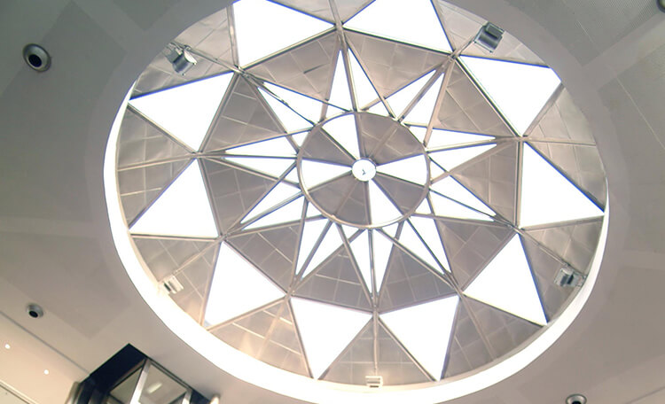
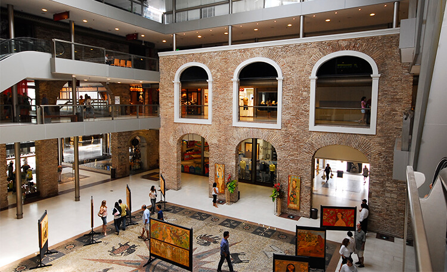
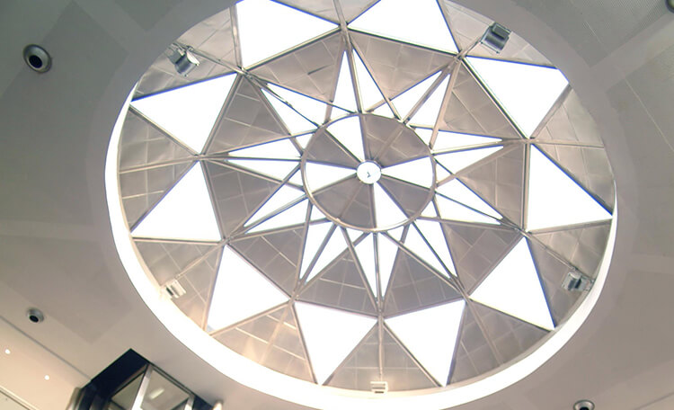
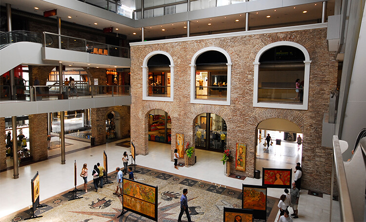

Paço Alfandêga
O Paço Alfândega é um verdadeiro retrato da memória urbana da cidade do Recife. Localizado às margens do Rio Capibaribe, no coração do Recife antigo, sua construção data de 1732. Neste local, funcionou, desde a ocupação holandesa, o Porto de Recife, considerado no século XVIII o porto mais movimentado das Américas.
O prédio que abrigou durante quase 100 anos o Convento dos padres da Ordem de São Felipe Néri (Convento dos Oratorianos), a partir de 1826, passou a funcionar como sede da Alfândega. Muito tempo depois, com a mudança do porto para beira-mar, foi doado à Santa Casa de Misericórdia, tendo passado por vários usos, de cooperativa e armazém de produtos a estacionamento.

Após um longo período de degradação, o edifício foi alvo de um ambicioso e cuidadoso projeto de restauração que recuperou sua beleza e valorizou suas características arquitetônicas, permitindo a instalação de um moderno empreendimento comercial e cultural, com características únicas onde história e modernidade convivem harmoniosamente em prol da preservação do patrimônio histórico e da revitalização do Bairro de Recife Antigo.
Hoje, o Paço funciona com um hub criativo, integrando varejo, cultura, serviços, tecnologia e negócios. São 37 operações de diversos segmentos. Além disso, o local tem um calendário de eventos movimentado, com exposições, feiras, shows e apresentações culturais.
 


